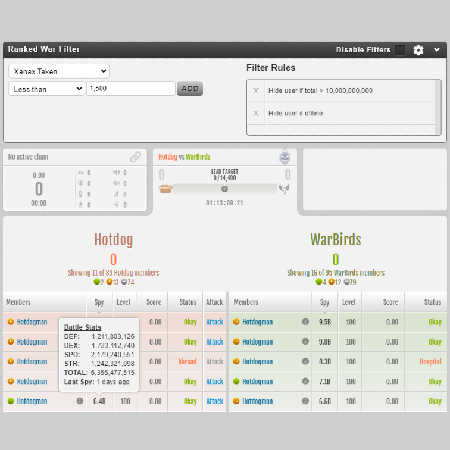
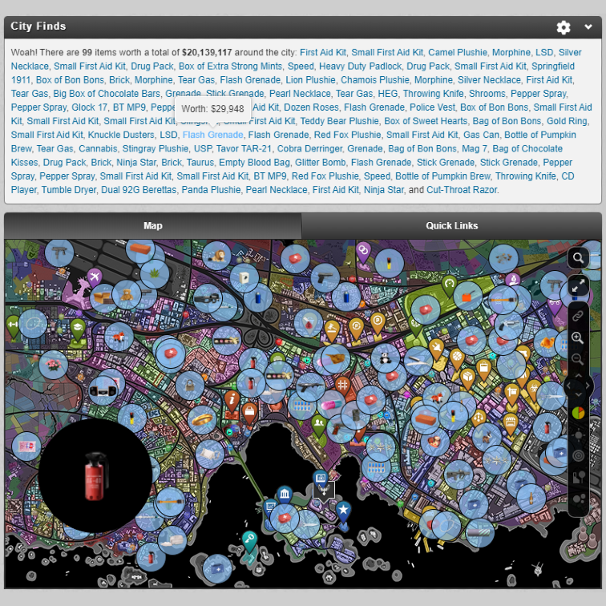

Ranked War Filter

City Finds

Christmas Town Helper
Gym Features
Jail Features
Auction Filter
Home Features
Torn Stats Faction Roster
Torn Stats Profile Stats
Bounty Filter
Display Case Management
Forums Features
Quick Items

Item Values
Last Action in Mini Profile